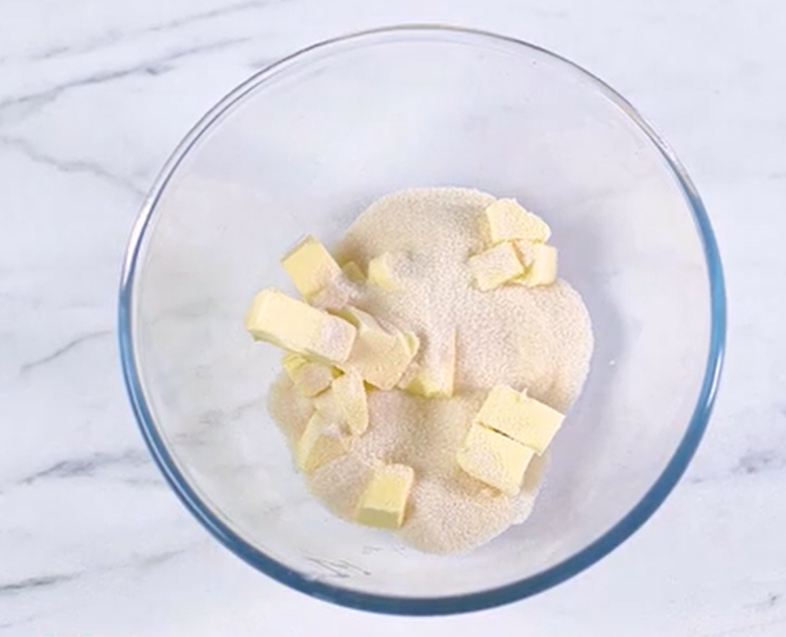
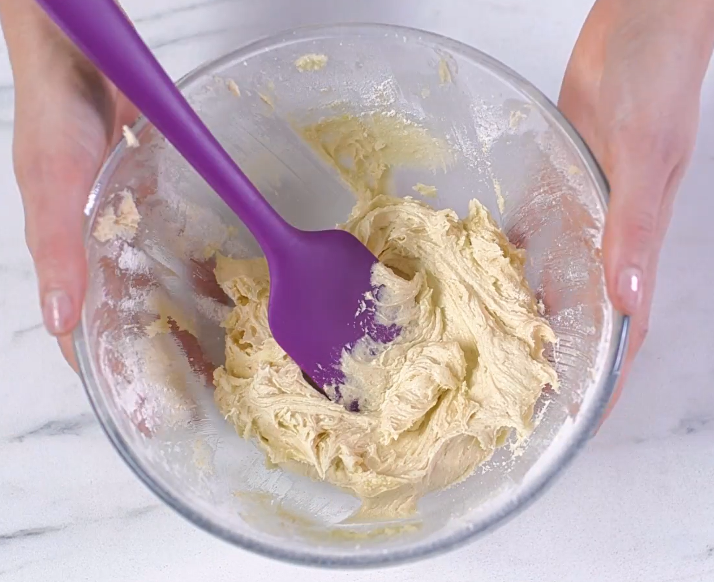
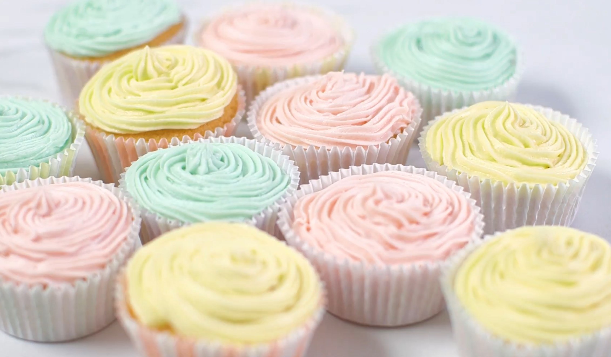

Method
STEP1
Heat oven to 180C/160C fan/gas 4 and fill a 12 cupcake tray with cases.
STEP2
Using an electric whisk beat 110g softened butter and 110g golden caster sugar together until pale and fluffy then whisk in 2 large eggs, one at a time, scraping down the sides of the bowl after each addition.
STEP3
Add ½ tsp vanilla extract, 110g self-raising flour and a pinch of salt, whisk until just combined then spoon the mixture into the cupcake cases.
STEP4
Bake for 15 mins until golden brown and a skewer inserted into the middle of each cake comes out clean. Leave to cool completely on a wire rack.
STEP5
To make the buttercream, whisk 150g softened butter until super soft then add 300g icing sugar, 1 tsp vanilla extract and a pinch of salt.
STEP6
Whisk together until smooth (start off slowly to avoid an icing sugar cloud) then beat in 3 tbsp milk.
STEP7
If wanting to colour, stir in the food colouring now. Spoon or pipe onto the cooled cupcakes.


Prep:20 mins
Cook:15 mins
Bake these easy vanilla cupcakes in just 35 minutes. Perfect for birthdays, picnics or whenever you fancy a sweet treat, they're sure to be a crowd-pleaser